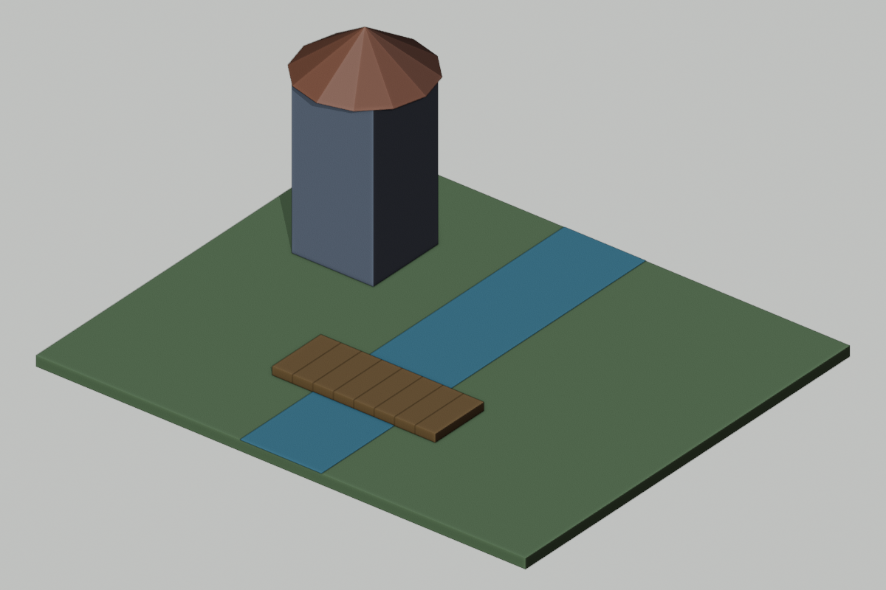
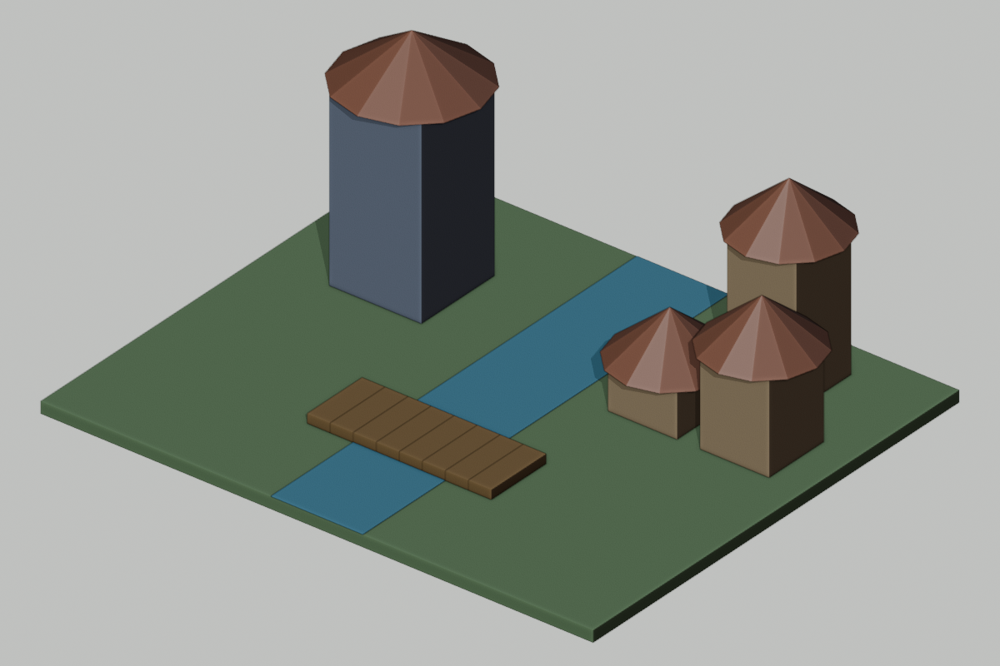

Your assignment today
- First: learn the explanation and watch today’s two demonstrations with your teacher.
- Then: try the two guided questions before looking at their solutions.
- Finish: work sections 1: Label the procedure; 2: Predict all three homes; 3: Make the recipe reusable.
- Write here: your printed sheet,notebook,or usual school document. Label it Day 5 and your design ID. This website does not save written responses.
- Turn in: the required sections,one prediction/evidence/revision statement,and the six-question check in the format your teacher assigns.
- Finished early: select a continued-practice section or ChoiceA. You do not need to finish every optional task.
Start here • today’s change • finish here
Today: Add three related homes.


These are actual Blender renders of prepared reference scenes. Your class may choose different colors/details or defer a build. Compare measurements,not just appearance. On Days2,9,and10,the visible geometry may stay the same while planning,testing,or archiving advances.
TODAY’S FINISHED PRODUCT
Three related homes from one reusable procedure
What you actually do
1. Read the short reading. 2. Complete the must-do sections listed below in your own paper journal or school document;the remaining sections are continued practice. 3. Compare with a partner when told. 4. Keep working while the teacher operates Blender. 5. Record what passed or needs fixing. 6. Submit your work and check.
You do not open Blender or an AI account. The teacher submits one class request. If your design is not selected,you still submit your own thinking.
Learn this before doing today’s work
How to use this section: read the six explanations,follow the worked examples,then try the two guided questions. Your teacher will discuss them before assigning independent work. Return to the numbered explanation if you need help with a check question.
1. Variable, parameter, argument, procedure
A variable is a name holding a value. A procedure is a named reusable set of steps. A parameter is an input name in its definition, such as h in def make_home(name,x,y,h). An argument is a supplied value in a call, such as 3 in make_home("Demo",6,2,3). The call matches arguments to parameters in order;the last argument goes to h. In the code card,def begins a procedure definition;the indented lines belong to it. Quoted text such as "H1" is a name value,not a formula. A # line is a comment for readers. return sends a result back to the caller and ends that call. The returned values in parentheses form an ordered record;read their fields in the order listed below the code.
2. Trace arithmetic by substitution
Substitute the supplied h into each expression,then calculate. If h=3,body_center=h/2 becomes3/2=1.5. The body top equals h when grounded at0. Trace columns should show the input and each derived value so a wrong formula can be located. A variable name is not an extra unknown once the call has supplied its value.
3. Roof depth must affect roof center
The roof is a separate object. If body top is h and roof depth is r,its center is h+r/2 and its top is h+r. With a fixed roof depth2,this becomes center=h+1. If we turn depth into a parameter,we must replace both the fixed depth and the center formula. Changing only one can produce a gap or overlap.
4. Test a formula with different inputs
One successful input does not prove a general rule. A forgotten constant may happen to work for one height. Choose several heights,including the smallest and largest permitted values. Write expected center/top values before comparing results. A systematic collection of such cases is a test suite.
5. Valid range and rejecting input
Our home-height contract allows 2≤h≤6:both endpoints are included. h=2 and h=6 are valid;1.9 and6.1 are invalid. The code condition h<2 or h>6 rejects anything outside that range. A rejection reports the reason rather than silently changing the height. Specify a positive roof depth before using it as a parameter. The word or makes the rejection condition true if either comparison is true. if runs its indented branch only when that condition is true. If the height is accepted,the later arithmetic lines run and return the home record.
6. A collection organizes related records
A collection groups related items in a structure,such as a table or list of home records. Each record stores name,x,y,height together. It is easier to inspect names for duplicates and values for invalid ranges when every record has the same fields. A collection helps review;it does not automatically correct mistakes or speed up rendering.
Watch how it is done
Choose Play for a captioned demonstration,or use Next step to move at your own pace. Each example takes about20 seconds to reach its last step;pause as long as you need. Use the class task’s own numbers when you begin your work.
Follow arguments into a home-building procedure
Animated teaching diagram · silent captions · 1 world unit = 1 meter. These are worked examples, not a recording of Blender.
Change roof depth without leaving a gap
Animated teaching diagram · silent captions · 1 world unit = 1 meter. These are worked examples, not a recording of Blender.
Read the original written steps
Read a call and calculate its output
Definition inputs:(name,x,y,h). Call make_home("Demo",6,2,3) means name="Demo",x=6,y=2,h=3. Body center=1.5;body top=3. With roof depth2,roof center=4 and top=5. Write these values in one row so every result remains tied to its input.
Replace a constant with a parameter
New definition:make_home(name,x,y,h,roof_depth). Use roof_center=h+roof_depth/2 and return roof_depth in the final field instead of2. Call make_home("Trial",6,2,4,4):body center2,body top4,roof center6,roof top8. The4-high roof begins at4 and touches the body.
Try together before working independently
Optional guided-practice replacement: Day 5:find the mistake and check a repair. Your teacher selects one activity rather than adding all of them.
Write or say your answer first. Then open the explanation and compare your method,not only your final value.
Guided practice 1
Use h=5,roof_depth=2. Find body center,roof center,and roof top.
Compare your answer and reasoning
Body center2.5;roof center5+1=6;roof top7. Body top5 equals roof bottom6-1.
Guided practice 2
Should h=2,h=1.9,and h=6.1 be accepted? Explain with the condition.
Compare your answer and reasoning
h2 accepted because neither h<2 nor h>6 is true. h1.9 rejected by h<2;h6.1 rejected by h>6.
Help for the worksheet and extra choices
For the hidden-constant task:roof bottom=center-depth/2;gap=roof_bottom-body_top when positive;negative means overlap. Collection audit checks unique names before positions. Optional width API:an API here means the agreed inputs,outputs,and invalid-input rules for your procedure;choose width bounds by testing full footprint edges,not only centers. For the graph challenge,put h on the horizontal axis and roof_top on the vertical axis. Plot each traced pair. With fixed roof_depth2,each increase of1 in h raises roof_top by1;describe that change rather than using an unexplained graph rule.
Connect the idea to our class world
A variable is a name for a value that may change. A parameter is an input named in a procedure definition. An argument is the actual value passed in a call. In make_home("H1",5,3,4), the arguments can provide name, x, y, and body height. The procedure can use height to place the body’s center at height/2 and the roof center at height+1. A change to one procedure can update the shared construction rule.
Our home body has dimensions 3×3×h. Its roof is a cone of depth 2 and radius 2.4. The default home centers in the map are H1=(5,3), H2=(9,3), and H3=(7,7). Height is allowed from 2 to 6 inclusive. A procedure must say what happens to invalid input. Silently turning -2 into a positive value hides an error. We will reject invalid heights and report a reason.
Named inputs make a family of related objects possible, but they also create responsibilities: use the passed height rather than a forgotten constant, use unique names, and check the valid range. Reading code is different from writing a prompt that asks AI to write code. In this lesson you will change actual code text, trace its values, and keep your own version. Teacher execution can supply shared feedback; your journal must still show your individual changes and predictions.
Today’s assignment size
Must do: numbered work sections 1, 2, 3,the evidence/revision sentence,and the six-question check. Other numbered sections are continued practice if time allows,unless your teacher assigns one as your grade-specific task. Finish required thinking before starting an optional card. Grade7 on Day8 completes the unlabeled-pattern task in section2.
All students receive the teaching above;optional work is not a prerequisite for answering the check. If the class needs longer instruction,complete fewer practice cases or use the next class’s retrieval time for the remaining evidence. Do not skip the explanation to fit every extension.
Code card you will read or change
# Python arithmetic; returns values for a modeling tool.
def make_home(name, x, y, h):
if h < 2 or h > 6:
return "REJECT: height must be 2 through 6"
body_center = h / 2
roof_center = h + 1
return (name, x, y, body_center, h, roof_center, 2)
# Return fields: name,x,y,body_center,body_height,roof_center,roof_depth
make_home("H1", 5, 3, 2)
make_home("H2", 9, 3, 4)
make_home("H3", 7, 7, 6)Your four work sections
Design ID:________________ Grade:____ Date:__________
1. Label the procedure
Copy the make_home definition and one call from the code card. Circle parameters in the definition. Box arguments in the call. Underline the expressions that place the body and roof. Write what the h<2 or h>6 check does.
Finished when you have: Annotated code card and rejection-rule explanation.
2. Predict all three homes
Use H1(5, 3, 2), H2(9, 3, 4), H3(7, 7, 6). Fill a three-row table: h, body center, body top, roof center, roof top. Roof depth stays 2. Show the calculation for H3.
Finished when you have: Three complete trace rows and one worked calculation.
| Home/h | Body center | Body top | Roof center | Roof top |
|---|---|---|---|---|
3. Make the recipe reusable
Add roof_depth as an input. Replace roof_center=h+1 with a formula that works for any positive roof depth;replace the returned final 2 with roof_depth. Write two calls with different heights and roof depths. Have your partner trace both.
Finished when you have: Edited actual code text, two calls, and two predicted outputs.
4. Organize our home records
Make a table or list with columns name, x, y, height for H1, H2, H3. Explain how you would spot a duplicated name. Write one revision from your partner check.
Finished when you have: Three-record collection and a revision statement.
When the teacher says “independent work”
Find the hidden constant
A faulty recipe sets roof_center=5 for every home. With roof depth 2, its roof bottom is 4. Test h2, h4, h6: state gap, contact, or overlap and its amount. Correct the formula. Explain why testing only h4 misses the bug.
After the class checks the result
Complete: “I predicted____. Our evidence source was____(actual scene/report/paper trace/simulated). It showed____. I changed or confirmed____because____. We still do not know____.”
Grade target
- Grade 6: Identify inputs and trace three homes;change one height and explain the center.
- Grade 7: Identify parameters and edit both roof-depth expressions;trace two calls.
- Grade 8: Use the parameterized calls and collection;add h1.9, h2, h6, h6.1 boundary tests and state valid height range.
What to turn in
Submit work sections 1: Label the procedure; 2: Predict all three homes; 3: Make the recipe reusable. Add your prediction/evidence/revision statement and the six-question check. Other numbered sections and choice cards are continued practice unless your teacher substitutes one for a grade-specific task.
Finished early? Choose one.
These are extra choices after your required work;your teacher can assign one in place of waiting work. Read the finished-product requirement before you start.
Parameter API design
Add width and color parameters to the home procedure. Define a valid range for width that fits H1/H2 spacing and the terrain. Write four calls including one invalid case. Trace footprint bounds for all valid calls and draft the exact rejection message.
Turn in: Edited procedure, input contract, four calls, footprint table.
Collection audit
Store these proposals in a table: H1(5,3,2), H2(9,3,4), H2(7,7,6), H4(11,9,4). Find the duplicate identifier and the home that exceeds terrain bounds with a 3×3 body. Correct both, then write a 5-step audit algorithm for identifiers, heights, terrain bounds, route access, and reporting.
Turn in: Original/corrected records and an audit algorithm.
Parameter sensitivity
For h from 2 to 6 in increments of 1, derive the roof top. Graph h against roof top on paper. Explain the rate of change and which expressions must change if ground becomes g=1.
Turn in: Your supported explanation,trace,or revised plan.
If technology fails
Use the printed code card and trace tables. Teacher can act as the interpreter and display one selected student’s predicted values. Label paper traces as tests of the algorithm, not proof of the Blender scene.
Shared-world reference strip
Ground24×20,top z=0. x=east/west,y=north/south,z=up. Tower body4×4×8,center(-7,4,4);roof radius3,depth2,center(-7,4,9). River x=-2 to2. Bridge8 planks,centers x=-3.5+i for i0–7,y=-4,z=.2;each1×3×.4. Homes H1(5,3,h2),H2(9,3,h4),H3(7,7,h6):body3×3×h,center z=h/2;roof depth2,center z=h+1. Grove:6 candidates,x=-9+2*i,y=-7,skipx=-5. Gate:posts x4 and8,width1,height4;lintel center(6,0,4.5),size5×1×1;gap3,clearance4. Required route width≥2. These are requirements until measured.